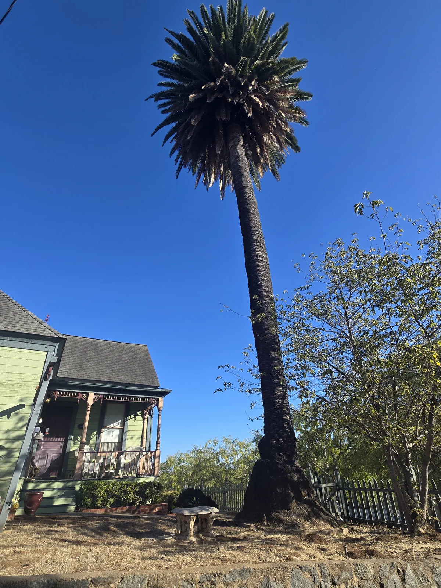
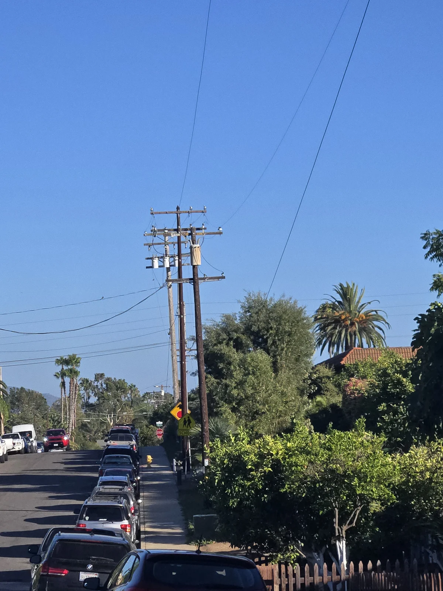
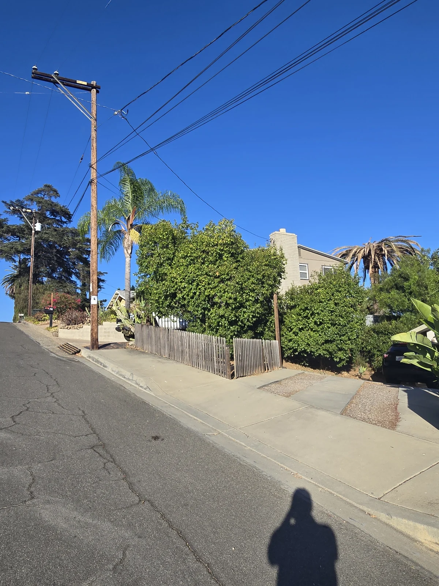

I was photographing a mature Canary Island date palm in Old Escondido when the wider picture became more useful than the close-up. The palm stood above a house, beside a slope, behind other vegetation, and among overhead utility lines.
That is the real site. A palm never arrives for care by itself.

I start farther back
People naturally look at the crown first. I do too. But before I decide how to approach a palm, I step back and look at the property around it.
Can I see the entire crown from a safe position? Is the trunk behind a fence or dense planting? Is the ground level? Are there roofs, vehicles, pedestrians, pets, irrigation, or utility lines nearby? Can the same view be photographed again on the next visit?
Those are not side details. They affect what can be observed, how the palm can be reached, and what a responsible next step looks like.

A crown photograph does not describe access
A tight crown photograph can show color, symmetry, frond position, and visible change. It can also remove every bit of context that makes the site difficult.
The wider photograph records where the palm stands. That matters when a return visit is planned, when treatment equipment must reach the trunk, or when another qualified contractor may need to become involved. The photograph is not a substitute for being there. It is a way to keep the site from becoming a vague memory.
I also separate palm condition from site condition. A declining crown may be obvious while the cause remains unknown. A utility line near a palm is visible, but its presence does not tell me who may work around it or what clearance is required. Those questions belong with the appropriate utility, arborist, or contractor—not with a guess from the sidewalk.

The first useful record is usually wide
My preferred starting set is simple: one photograph of the whole property setting, one of the entire palm, and closer views of the crown, trunk, and base where they can be taken safely. The wide view establishes location. The closer views preserve detail.
On a return visit, that order helps me find the same position and compare what changed. It also makes it harder to confuse one palm with another when several crowns rise above the same block.
This is one reason I do not want palm care reduced to a treatment date. Treatment may be appropriate. So may monitoring, irrigation correction, nutrient work, or coordination with another professional. The site helps decide which of those conversations belongs next.
The palm is the reason I am there. The rest of the property determines how the work can be done responsibly.